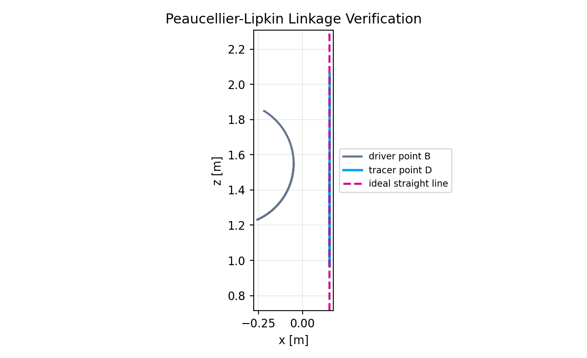
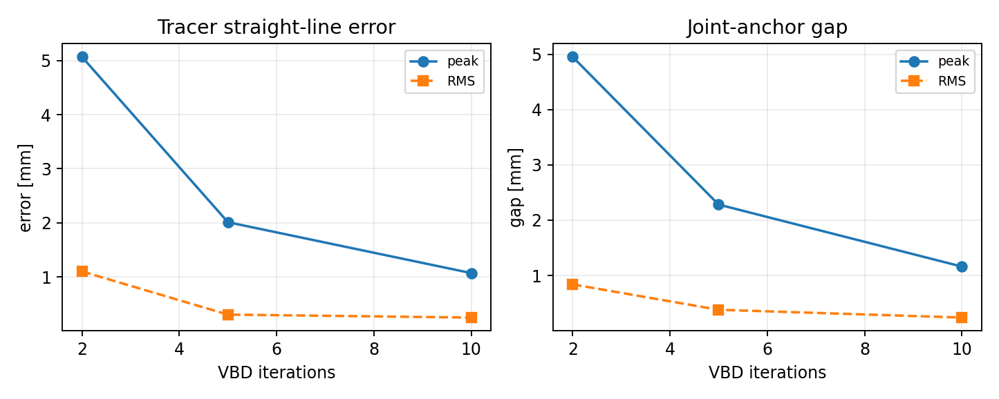
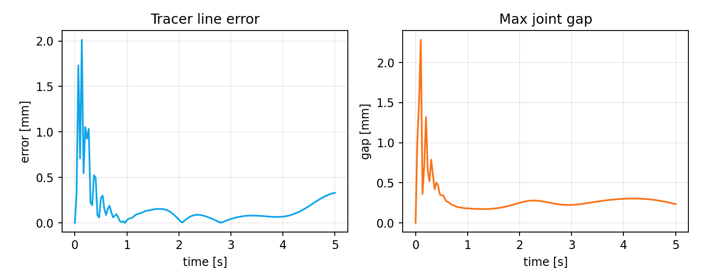
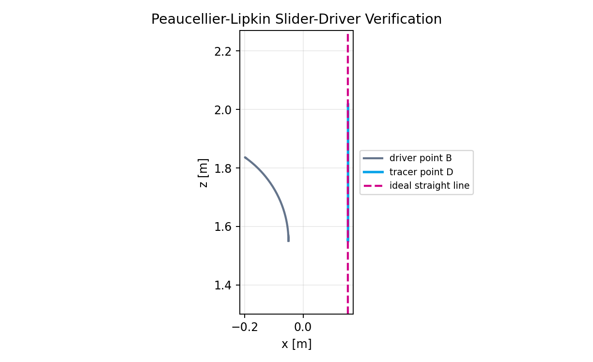
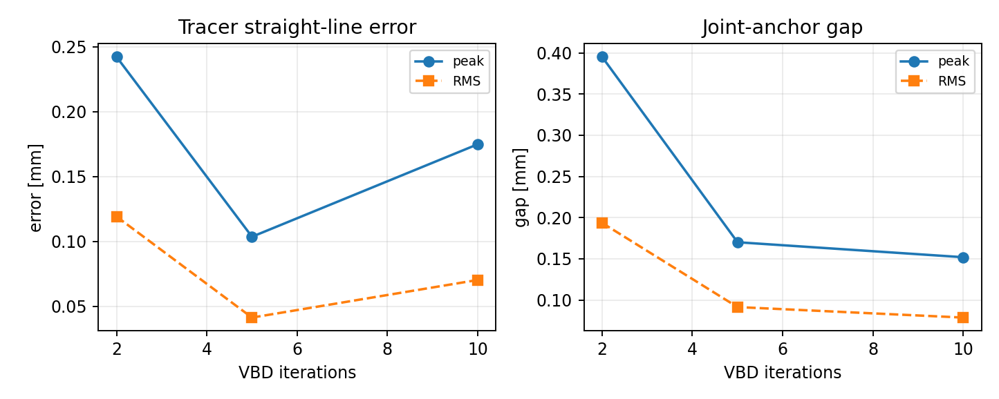
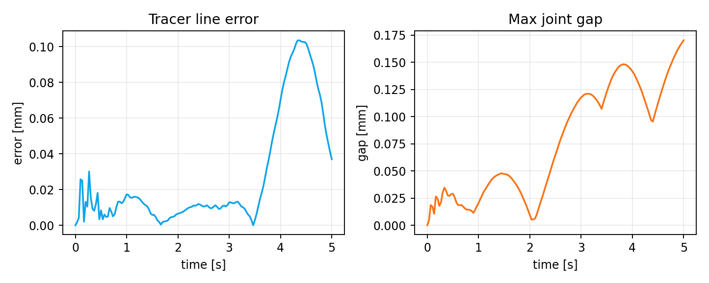

Setup
Both cases use the same Peaucellier-Lipkin inversor geometry: fixed
pivots O and P, equal links OA
and OC, and rhombus ABCD. Gravity and contact
are disabled so the measurement isolates joint closure and mechanism
geometry.
PB drives point B
around the grounded pivot.
2, 5, and 10
VBD iterations; substeps stay fixed at 1.
0.3% of the 0.85 m main-link length.
Newton-Rendered Videos
These videos are captured through Newton's OpenGL viewer from the same source snapshots used by the local validation reports.
PB drives the Peaucellier cell.
B.
Direct Driver
The direct case is the cleanest Peaucellier-Lipkin check: the crank
PB is kinematic, so the report mainly measures how well
the VBD revolute-loop constraints preserve the ideal inversor path.
2.01 mm;
RMS: 0.304 mm.
2.28 mm;
RMS: 0.381 mm.
10 iterations, peak line error is 1.07 mm
and peak joint gap is 1.16 mm.

D; magenta is the ideal straight line.


5 iterations.Slider Driver
The slider-driver case adds a prismatic guide and coupler-rocker driver before the same Peaucellier cell. It is useful because the driver itself is a constrained mechanism, not only a prescribed crank.
0.104 mm;
RMS: 0.041 mm.
0.17 mm;
RMS: 0.092 mm.
0.152 mm; the 5-iteration
budget is already visually accurate.

B.


5 iterations.Summary
| Case | Driver | Line error at 5 iters | Joint gap at 5 iters |
|---|---|---|---|
| Direct Peaucellier-Lipkin | Kinematic rotating link PB |
peak 2.01 mm, RMS 0.304 mm |
peak 2.28 mm, RMS 0.381 mm |
| Slider-driver Peaucellier-Lipkin | Kinematic slider plus rocker/coupler | peak 0.104 mm, RMS 0.041 mm |
peak 0.17 mm, RMS 0.092 mm |